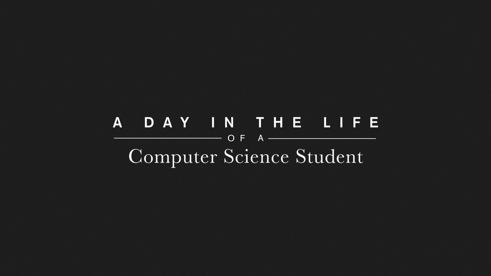
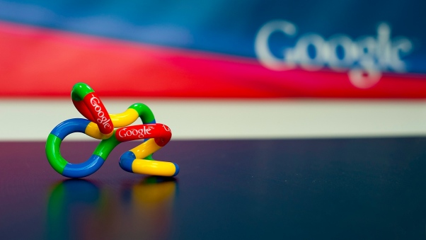

Becoming a programmer
These blogs are going to be continues, meaning they will be updated as I move along in life, one day I feel one way about something the next I might feel a different way about it, these blogs are experiences in my programming life with minimal editing, so yeah its going to be rough but I do not want to do alot of edits to these blogs because I want the content to be what it is when I wrote it, I want to laugh at my mistakes one day. I am going to be randomly adding content to the different blogs, I will come up with a way to notify which blog has been updated. Anyways all of what i write here is me, my opinion as I am learning about my interests nothing here should be taken as the absolute truth, I could be wrong, This is how I understand things.

My programming adventure
The first time I actualy touched a computer or even seen one, these are like my earliest memories, it was in pre-school,
we would walk to our principals house (which was accross the road) like once every month or something and we could play
with her computer, this happened so seldom I only have one real functioning memory of this particular thing happening, but its pretty
vivid.
The second time I remember seeing a computer was when my dad bought us one at home, it was this white huge desktop that
sat ontop of the box, it was running some early version of windows, this is like 1999/2000, I so would say its windows 99./98,
at this point I know one thing about computers I CAN PLAY GAMES ON THIS THING!
, yeah I grew up
a mega gameboy, I loved games but I loved electronic games, TV games!!!
I started out at the computer with paint and MS-word, I would wake up early in the morning and just sit at the PC creating doodles
on paint, thinking about it I laugh at my self, how could a program like paint manage to captivate me for all those hours? We did have
games on our PC but it was the standard card games that I didnt understand or minesweeper (which to date I dont understand), so those games
weren't really fun for 4/5 year old me, there was another game though it was about getting a monster and 3 people across a river with a boat
and not get any of the humans eaten in the process, I didnt know how to put on this game though so everyday I would call my dad and he would
start it up for me, so when he wasnt around I played with what I could, word and paint.
After that my primamry school had weekly computer classes, i also remember us having a computer at home from a really young age, but all up until
my first year of Computers Science at Unam I really didn't know a thing about programming or how computers really worked, I was labeled the tech kid
of the family before that because I was the person to bring your device to when it wasnt acting right and I would magically fix it in record time, lol
yeah I was that kid but really all I was doing most of the time was reading and following instructions, there things were written all you had to do was read,
but I really had no idea how computers worked.
First year Computer Science, thats when I remember seeing my first programming language, I remember googling how websites were made and ending up downloading
dreamweaver, man I didnt understand jack shit, but I was facinated by the amount of absolute jiberish you had to write just to get a computer to say "Hello World!"
it was almost funny at first like, what? why would anyone spend so much time writting all this just to make a computer do something simple?
But I continued with it, I had already registered for computer science after I watched my medicine fly away the year before, I chose Computer Science because I knew I
would be working with computers alot and I liked to play computer games plus computers don't bleed, trust me the not bleeding part was very important when I was deciding
what I was going to do everyday for the rest of my life.

ALright new day and its time toc continue this story, so I was going to be in Computer Science but had no real knowledge about what that ment or what I was going to be doing
, I swear at this point in life I thought I was going to be troubleshooting computers and installing anti-viruses my whole life.
The first computer programming language I learned was Visual Basics and it was DIFFICULT but I liked it, I didnt really understand how to do it
but I did understand that I could make computers do things and that blew my mind, what I learned during my first programming lesson was that computers will never say no, it just
depends on how you speak to them, So I decided then and there that I would learn to be a very good "computer whisperer".
Another thing I remember becoming very clear to me was that everything that moves on a computer screan is some how connected to a line of code, in visual basics I we would drag and drop
these items onto the screen and build the interface of our program we would than go and write the code that made these items on the screen do things, it was kind of like a puppet show, you
set up the puppets that the audience(users) will see while you hide in the background and make things actualy happen, its all just an illusion.
After a few months of Computer Science I managed to make what I consider to be my first actual program, we had to make a game for our VB class, I must admit I put some work into this
I didn't really understand what I was doing but i managed to come up with the most basic, most laughable version of Super Mario I had ever seen, it was riddiculus(this deserves it own blog).
After about 3 months of Computer Science I got a chance to go to Malaysia and I jumped at it, God knows where Malaysia is and who lives there but I was going there, I was going to do Bioinformatics I googled it and it was a pretty scary introduvtion, I read about DNA and gentic engineering but it was all being done with computers, what? Anyways I read computers and I really wanted to get out of Namibia so I fugured "Fuck it, The kids will be alright" and boom I am on a plane to unknown lands, I underestimated just how long 5 years really were.
By the time I got to Malaysia I knew there was something called programming and I was determined to get good at it because if I did I could make computers do all sorts of things, so I was determined to be excellent at programming, The first real programming I did was in C++, and it was a pain, it was difficult but I was determined to get good at it, I went all the way from 1st year to about third year without really understanding how to program, I understood how it worked and what it could be used for but I didnt really understand how to do it, but I kept at it, trying and trying to wrap my head around this thing, I spent so much energy on programming I didnt even care about my other classes any more and I still didnt understand why.
This all changed early 3rd year when I discovered Python and BOOM it all started falling in place, python was easy to write because its very close to English and its just so intuitive, all the lessons I had learned in Java, C++, R and VB all started to make sense, I finally understood that programming was like a language, there are rules to follow, I started writting a whole host of scripts in python after that I could finally make my computer do cool things, I could make it clean its own desktop, I could listen to random songs on youtube as I studied, if I found one I liked I didnt have to do much I just coppied its title to a txt file and saved, I had a script that went online and downloaded albums by this artists as well as its wikipedia page, the pages were saved on my google drive and so automatically synced to my ipad, so every morning I would get up pick up my ipad and sync my phone, as I listened to this new artist at school I also took time to read thier wikis lol it gave the albums more meaning.
I had a few cool little scripts on my computer, most of them were inspired by an article I had read online about a lazy programmer who had all these crazy little scripts on his computer that did all the things that he does on a daily bases, it was pretty hilarious but got me thinking, its true we dont have to do all the things we do on a day to day bases, computers are good at repetitvie things. The only problem with my scripts were everyone was making cool apps that other people could easily use over the internet and all my scripts were on my PC, this is how I learned about APIs, at the time I was doing alot of tweeting, like alot, so i decided to build something that I could share with my "friends" on twitter and I built When_did, it was this little script that allowed users to query when other users started tweeting by tweeting something like @blavejr when did @person, the script would than check if the tweet had 4 words, break down the text remove the words @blavejr and "when did", query twitters API for the data and replied. It was alot of fun building it but watching people use it and like it was even more rewarding, watching people laugh and have fun was encouraging, I went on to write a number of other twitter, facebook, whatsapp and telegram bots after that one even landed me into Microsofts Imagibe Cup, but thats another story for another day.
The first taste of commercial programming (My first job), was my internship.
During my final year I had to make a decision wheather to go work for a large security company or this small start up called Epnox Technologies, I was about to go for the larger company because the offered me more money and I was thinking that would look better on my resume, but the semester before my friends had gone out on internship and they had all gone to this huge company and ended up being used to file papers, get coffee or the worst they were put in the call service department, ansering calls from users and troubleshooting thier problems.
I wasnt gonna risk being put in a call center, so I went to Epnox and I dont ever regret going there. The first thing I did at Epnox was try and set up the website and I failed miserably, I didnt have enough HTML and CSS knowledge to get the website up and to make matters worse I knew zero javascript, up until this point my programming had been confined to my little beloved python scripts, but I was determined to learn so I got onto youtube and got a few tutorials after about 3 days I presented my website which was hidious and gracefully rejected by my boss.
I was than re-assigned to the iOS department, we had an Android expert at the office from russia, Artem seemed to know everything Androidy and could code at the speed of light, I didnt even know what language iOS apps were built in, I was working with Nabil a rather cool kid, he was writting PHP CRON jobs and started iOS at the same time as I did, so we set there and watched countless youtube videos trying to learn as fast as possible how to make an app in iOS.
We staretd of with swift and after about 2 weeks the code was flowing and I understood what was going on, I started on the sign up and sign in of the app, and it was major fun, swift was a subtle sexy language, support was pretty tricky to find but stackoverflow always had something to point you into the right direction.
After finishing up on sign in and sign up I had to move on to the map aspect of the app, the app we were building was called PicHere and it was like instagram on a google maps, the atmosphere at Epnox was amazing, working hours were very flexible, we made jokes as we worked, there was no hierachy, working for a start up was amazing. Swift was nice until I needed to integrate google's maps into the app, see google map libraries are written in Objective-C and accessing them with swift was difficult, I tried and tried but couldn't get them to work, we stayed up with Nabil on many nights trying to find a solution but to no avail, I even remember downloading some other map clustering library off github and trying to edit that to fit my needs, the library was a swift re-write of google's Objective-C library and it worked but it was extremely buggy and inconsistent, I spent another week trying to fix it, here I learned indepth how google's library worked.
It wasnt long before Nabil also ran into similar issues, he couldnt get the Objective-C libraries for the chat SDK to work with swift and I watched him feel my pain losing his mind trying to find a fix. One day our project manager Eric Goh walks in and makes the decision that we are going to swicth from swift to Objective-C, we were about a month into development and needed to throw away all the code we had written and start over with Objective-C, we had to learn a new langauge and renbuild everything in record time, I remember the API guy saying there was no way we could do it, Objective-C was too difficult and messy, his Name was Ridz and he was pretty good at what he did, he was an experienced backend developer who know what they were doing.
We surprisingly picked up Objective-C quickly and had managed to get back on track in less than a month, We were in hyperdrive. Objective-C proved tough and messy at first sight but after a while it startes to make sense and becomes intuitive, I actualy liked Objective-C more than I did swift.
My internship was 3 months long but the company gave me a further 4 month full time contract, in total I spent about 7 months at Epnox and I had a great time there, this is when I went from a script kiddie to a junior developer, I learned a great deal about how applications were built and had a better understanding of the process and requirements. Programming was what I wanted to do for the rest of my life, I really enjoyed it.  Home and Google Rainmaker.
I started at Rainmaker an over-confident young junior developer, I could somewhat write code at this point, I was able to go from nothing to finished product that actualy works but might not be very scalable but it some how gets the job done. I was called in because they needed someone who could write scripts that can access API's and add functionality to websites, I was pretty confident , I had written scripts accessing API's since college.
I had to start off by learning javascript as fast as possible, at this point in my programming career I have had to learn enough new languages to develop a system that allows me to learn additional languages faster, really I just realised that all langauges do the same basic things the only thing that changes is the syntax, so after about a 2 weeks I was flowing javascript, I didnt really understand what I was doing but I could stitch work together.
I was introduced to Stephan Lambard, who is an extremely experienced javascript backend programmer, he was tasked with sort of mentoring me, getting me to understand more advanced programming concepts and within about 3 weeks I had learned an astonishing much from the man. I learned what an API really is, how to make one and protect it. At this point in time I also learned about the importance of object oriented design, I learned that it is important to sit down and plan before jumping into making even the smallest of projects, messy code will frustrate the living soul out of you.
Another thing I learned from Stephen Lambard which I must admit I didnt understand until my code base became too big to map out in my head, it was to
write clean code
, I cannot now stress
enough the importance of writting clean code, readable code with variable names that are explicit and fully explain what the variable does, I remember reading one of Stephens libraries and I was amazed by the clearity
in the mans code, everything was neat and flowing, it was almost as if it was written in English. Clean robust readable code will save you hours of work.
Another concept I started to grasp around this time is the concept of Object Oriented Programming, OOP has been one of those things as a programmer I knew how to use it but I didnt really understand it, its just one of those things you think you understand but sometimes a scenario comes up and you are just baffeled. I started reading boooks on OOP trying to fully grasp it and I would say at the time of writting this I do have a better understanding of OOP now.
I was moved around alot at Rainmaker never doing one job (I mean I was programming but I was programming everything and anything), I was the programmer who was sent anywhere where additional hands were needed and I learned a great deal from all this activity, I had OK knowledge of HTML and CSS when I came to Rainmaker, I mean I know what they did but not very much about how to make them do these things, but soon I found myself in the front end developer team of Rainmaker I wasnt only writting them scripts for functionality anymore, I actualy had to design websites now.
They were using bootstraps 4 and MDB to make these amazing websites, when I got re-assigned I didnt like frontend work very much, it all seemed counter-intuitive, html didnt make sense to me, neither did css, "Hoe on earth is this considered programming" was what I also thought when I tried front end work, "where is the logic?" its was all a mess to me, but when the boss decided more hands were needed on the frontend side I jumped at it, I started learning html and CSS, I picked it up pretty quickly too, by the end of the first week I was playing around with animate.css, by the end of the 2nd week I had my first design for a customer, unlike at Epnox this one was actualy very nice and I was proud of myself too.
I kept trying to better my frontend design skills as well as my API and app development skills and thats how we ended up here with this blog kind of platform, its been a really fun experience thus far, I learned alot and continue to learn everyday becoming a programmer isnt something one can do over night, not even within a few months, becoming a programmer takes time, effort and persistence, but you will fall inlove with the process, everyday you will go to work and be amazed, as you learn new things, this quest to become a computer whisperer has changed me in so many ways, the way I look at problems to is very different because of programming, your attention to details will go through the rough, your ability to focus for long hours will also be enhanced, becomng a computer programmer is amazing!